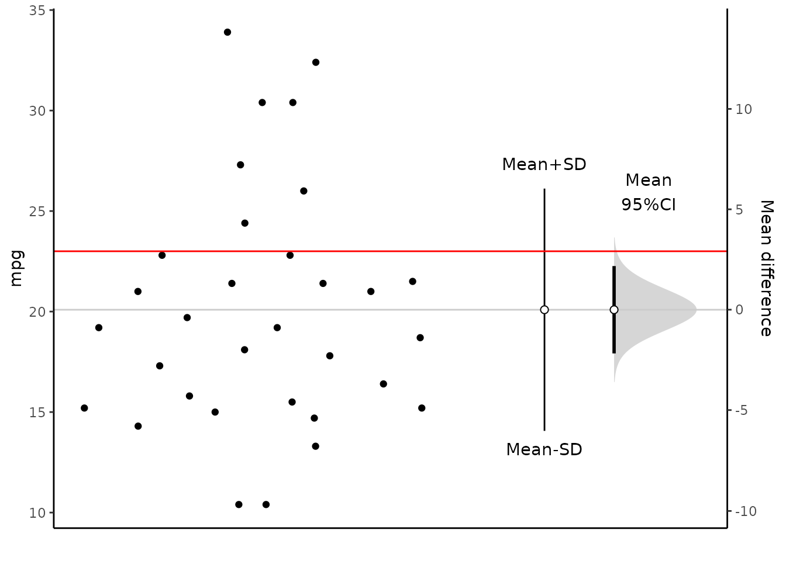
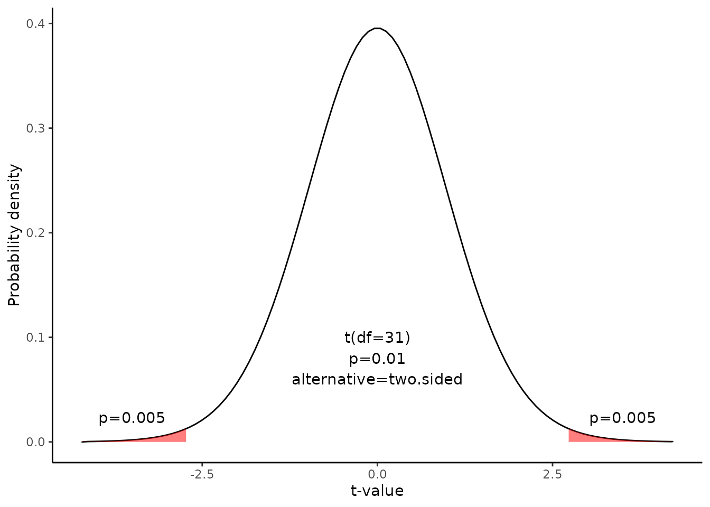

Hypothesis test for a mean
Source:vignettes/Hypothesis_test_for_a_mean.Rmd
Hypothesis_test_for_a_mean.RmdThis document is prepared automatically using the following R command.
library(interpretCI) |
Given Problem : Two-Tailed Test
An inventor has developed a new, energy-efficient lawn mower engine. He claims that the engine will run continuously for 23 minutes on a single gallon of regular gasoline. From his stock of 2000 engines, the inventor selects a simple random sample of 32 engines for testing. The engines run for an average of 20.09 minutes, with a standard deviation of 6.03 minutes. Test the null hypothesis that the mean run time is 23 minutes against the alternative hypothesis that the mean run time is not 23 minutes. Use a 0.05 level of significance. (Assume that run times for the population of engines are normally distributed.) |
Hypothesis Test for a Mean
This lesson explains how to conduct a hypothesis test of a mean, when the following conditions are met:
The sampling method is simple random sampling.
The sampling distribution is normal or nearly normal.
Generally, the sampling distribution will be approximately normally distributed if any of the following conditions apply.
The population distribution is normal.
The population distribution is symmetric, unimodal, without outliers, and the sample size is 15 or less.
The population distribution is moderately skewed, unimodal, without outliers, and the sample size is between 16 and 40.
The sample size is greater than 40, without outliers.
This approach consists of four steps:
state the hypotheses
formulate an analysis plan
analyze sample data
interpret results.
1. State the hypotheses
The first step is to state the null hypothesis and an alternative hypothesis.
\[Null\ hypothesis(H_0): \mu = 23\] \[Alternative\ hypothesis(H_1): \mu \neq 23\]
Note that these hypotheses constitute a two-tailed test. The null hypothesis will be rejected if the sample mean is too big or if it is too small..
2. Formulate an analysis plan
For this analysis, the significance level is 95%. The test method is a one-sample t-test.
3. Analyze sample data.
Using sample data, we compute the standard error (SE), degrees of freedom (DF), and the t statistic test statistic (t).
\[SE = \frac{s}{\sqrt{n}} = \frac{6.0269481}{\sqrt{32}} = 1.07\] \[DF=n-1=32-1=31\]
\[t = (\bar{x} - \mu) / SE = (20.090625 - 23)/1.07 = -2.731\]
where s is the standard deviation of the sample, \(\bar{x}\) is the sample mean, \(\mu\) is the hypothesized population mean, and n is the sample size.
We can visualize the confidence interval of mean.
plot(x)
Since we have a two-tailed test, the P-value is the probability that the t statistic having 31 degrees of freedom is less than -2.73 or greater than 2.73.
We use the t Distribution curve to find p value.
draw_t(DF=x$result$DF,t=x$result$t,alternative=x$result$alternative)
\[pt(-2.731,31) =0.01 \]
4. Interpret results.
Since the P-value (0.01) is less than the significance level (0.05), we can reject the null hypothesis.
Result of meanCI()
call: meanCI.data.frame(x = mtcars, mpg, mu = 23)
method: One sample t-test
alternative hypothesis:
true mean is not equal to 23
Results
[38;5;246m# A tibble: 1 × 7
[39m
m se DF lower upper t p
[3m
[38;5;246m<chr>
[39m
[23m
[3m
[38;5;246m<chr>
[39m
[23m
[3m
[38;5;246m<chr>
[39m
[23m
[3m
[38;5;246m<chr>
[39m
[23m
[3m
[38;5;246m<chr>
[39m
[23m
[3m
[38;5;246m<chr>
[39m
[23m
[3m
[38;5;246m<chr>
[39m
[23m
[38;5;250m1
[39m 20.09062 1.0654 31 17.91768 22.26357 -2.7307 0.01033Reference
The contents of this document are modified from StatTrek.com. Berman H.B., “AP Statistics Tutorial”, [online] Available at: https://stattrek.com/hypothesis-test/mean.aspx?tutorial=AP URL[Accessed Data: 1/23/2022].